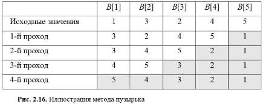
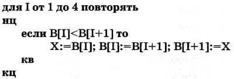
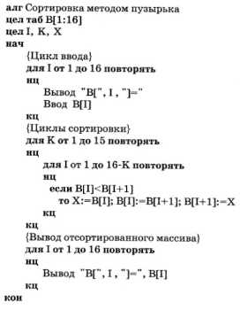
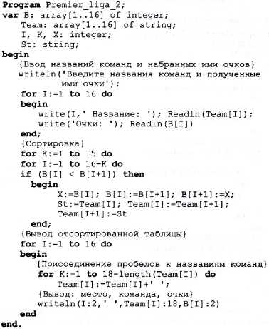
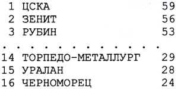

Основные темы параграфа
Алгоритм сортировки методом пузырька
Программа на Паскале методом пузырька
Алгоритм сортировки методом пузырька
Рассмотрим, как программируется сортировка массива. Для решения этой задачи существует целый класс алгоритмов» Мы рассмотрим здесь только один из них, известный под названием «метод пузырька». Откуда такое название, станет ясно немного позже.
Проиллюстрируем идею метода пузырька на маленьком массиве из пяти чисел. Пусть это будет массив В[ 1:5], исходные значения в котором распределены случайным образом (рис. 2.16). Требуется отсортировать числа по убыванию.

Первый этап (первый проход). Последовательно сравниваются пары соседних чисел и упорядочиваются по убыванию. Сначала сравниваются B[1] и В[2]. Поскольку на втором месте должно стоять меньшее число, то числа меняются местами. В[1] становится равным 3, В[2] — равным 1. Затем упорядочиваются В[2] и В[3]. Их значения тоже переставляются: В[2]=2, В[3]=1. Затем упорядочиваются В[3] и В[4]. И наконец, В[4] и В[5]. В результате первого прохода минимальное число попадает на свое место: В[5]=1.
Алгоритм первого прохода можно описать так:

Обмен значениями В[I] и В[I+1] происходит через третью переменную X.
Вот теперь можно понять смысл образа пузырька! В результате прохода минимальное значение «всплывает» в конец массива, как воздушный пузырек в воде всплывает на поверхность, подталкиваемый архимедовой силой.Далее нужно повторять такие проходы еще три раза. После второго прохода на своем месте окажется В[4], после третьего прохода — B[3]. После четвертого прохода упорядочатся В[2] и В[1]. Нетрудно понять, что при втором проходе не надо трогать В[5], т. е. цикл должен повторяться для I от 1 до 3. При третьем проходе — от 1 до 2. И наконец, на четвертом проходе — от 1 до 1, т. е. всего 1 раз.
Следовательно, циклы, реализующие проходы, сами должны циклически повторяться. Причем при каждом следующем повторении длина цикла должна уменьшаться на единицу.
Отсюда вывод: структура алгоритма должна представлять собой два вложенных цикла.?

Здесь переменная К играет роль номера прохода. Для массива длиной 16 такие проходы требуется повторить 15 раз. Длина каждого К-го прохода равна 16-К.?
Программа на Паскале методом пузырька
Теперь запишем программу на Паскале. Но мы ее немного усложним по сравнению с построенным алгоритмом. По условию исходной задачи нам нужно получить список команд в порядке занятых ими мест и число очков, полученных каждой командой. Следовательно, сортировать нужно не только массив В, но и массив Team. Делается это очень просто: в массиве Team параллельно с массивом В производятся те же самые перестановки. В конце работы программы на экран выводятся одновременно элементы обоих отсортированных массивов.

Поясним новые средства Паскаля, которые применены в этой программе. Обмен значениями между элементами строкового массива Team должен происходить через переменную строкового типа. Для этого в программе используется переменная St.
Вывод результатов на экран организован так, чтобы на экране номера мест, занятых командами, названия команд и набранные очки выводились в три ровных столбца. Названия разных команд имеют разную длину. Самое длинное название у команды ТОРПЕДО-МЕТАЛЛУРГ состоит из 17 символов. Для выравнивания длин строк каждое название дополняется пробелами до 18 символов. Число добавляемых пробелов вычисляется так:
18-length(Team[I])
Здесь length ( ) — это стандартная функция, вычисляющая длину строки (число символов), указанной в скобках. Например, для ЦСКА длина строки равна 4, а для ТОРПЕДО-МЕТАЛЛУРГ длина равна 17. Значит, к ЦСКА добавится 14 пробелов, а к ТОРПЕДО-МЕТАЛЛУРГ — 1 пробел.
В операторе Team [I] : = Team [I] + ' '; используется операция «+» присоединения символов. В данном случае присоединяется пробел. К строке Team [l] добавится столько пробелов, сколько раз повторится присоединение. После этого по команде
Writeln(1:2,' ',Team[I]:18, B[I]:2)
в ровные колонки выведутся места, названия команд и очки. Результаты будут иметь на экране следующий вид:

Метод пузырька-алгоритм сортировки числового массива.
Структура алгоритма метода пузырька-два вложенных цикла
с переменной длиной внутреннего цикла
lenght()-функция определения длины строковой переменной
В Паскале существует операция присоеденения строк. Ее знак-<<+>>
Вопросы и задания
1.Как пояснить название метода сортировки массива-"Метод пузырька"?
2.Сколько проходов с перестановками элементов потребуется при сортировке массива из 100 чисел?
3.Если несколько команд набрали одинаковое количество очков, то места между ними распределяются по заднице забитых и попущенных мячей: чем разница больше, тем место выше. Попробуйте усовершенствовать программу, учитывая это правило. Для этого в программу надо добавить массив с разницей мячей. Придумайте тест, на котором можно проверить работу программы.